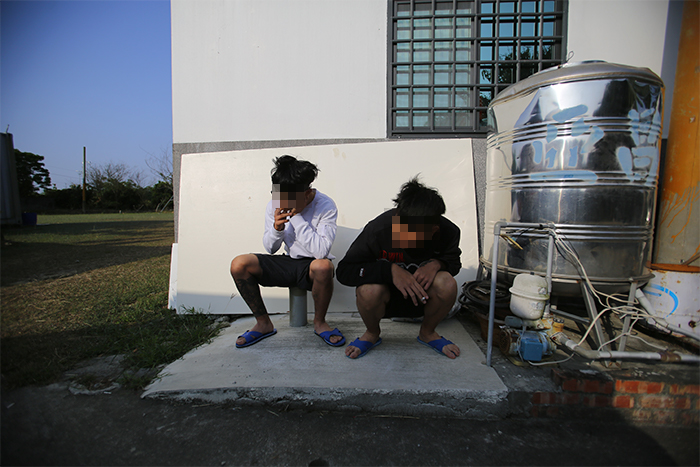
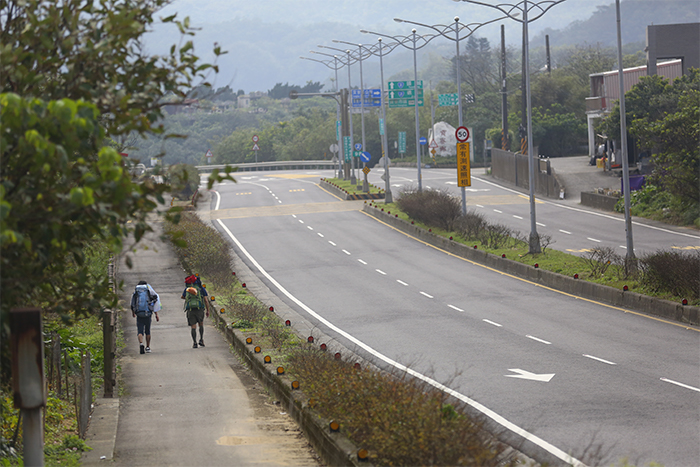
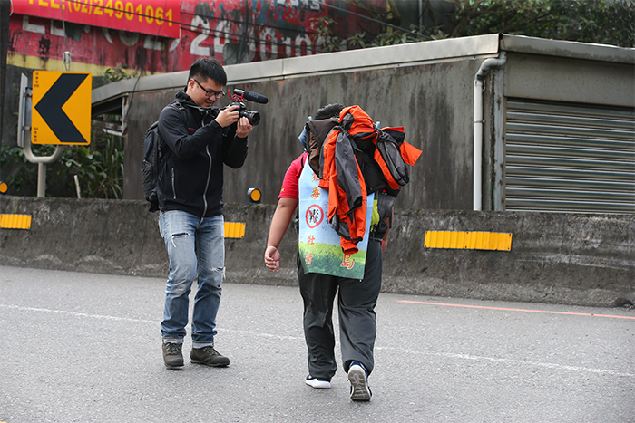

【搖擺少年】採訪側記：我甚至覺得
當時是在看他如何墜落
如同15歲少年每天都不斷在成長一般，紀錄小安（化名）這個個案，電腦裡的資料夾也從一開始只有10G、20G，不斷累積成了1T、2T的龐大專案，而我們也就這樣跟著小安，長達3年。
在這3年當中，很多事其實悄悄在改變，不止小安自己前前後後進少觀所受懲教就超過一年多；當年一起參與採訪的同事，則有好幾位已離開《蘋果》。
「《蘋果》哥哥變成《蘋果》姐姐了嗎？」當我們繼續這個專題，進到誠正中學與小安面會時，他短短的這句問話卻衝擊到我內心。這幾年，小安經過大風大浪，心裡卻也沒忘過《蘋果》陪他環島的那段經歷。也許我們紀錄他的同時，也被少年刻劃在他的心裡。

其實，小安的故事雖像流水，卻一直是我們工作之餘，始終放不下的日常。就像當年和他一起環島時，一位同事曾暫時離隊到國外旅遊，小安當時和他臉書視訊，劈頭就說：「幫我買尼泊爾煙來抽抽看！」同事只回了：「旅費沒了，煙好貴。」事實上卻偷偷買了好幾包放在行李箱，等著小安成年，離開誠正的那天，給他做為成年禮物。
我回過頭問當時跟少年一起環島的前同事們，什麼讓他們印象深刻。那是徒步環島到宜蘭的某天晚上，小安坐上採訪車，搶著連接車內音源線，「給你們聽一下最近超夯的一首電音，超high的～」
車內喧嘩的慢搖電音成為背景音，青澀16歲少年的臉龐，一邊嘻笑訴說著成人世界的種種誘惑，吸毒、性愛等話題，顯得格外突兀。鏡頭前，小安鮮少說出真心話。
「想了想實在不知道能說什麼，甚至覺得當時，我其實是在看著他如何墜落。或許下次有機會放下攝影機好好聊天，我才算真正認識他。」同事這麼說著。

事實上，回想第1次跟小安碰面，他就誤以為我們是便衣警察，不斷亂掰故事，後來經他的督導教官告知我們的來歷，他才開始講自己的故事，但都是一些枝微末節的小事，始終對我們保持戒心，我想這是他自我防衛的機制。
鏡頭前，小安總說：「我很獨立啦，不需要家人關心。」顯得自己不畏懼風浪，也不需要陪伴，環島時我們也聽過他對著母親咆哮要錢。但當親生母親從中國來探視他時，我們看見他不斷和媽媽撒嬌，流露出溫和眼神，也許只有那時，才是真正卸下心防的小安
專題進入尾聲，到誠正採訪的那天，新竹的風颳得冷冽，穿過3、4道上鎖的鐵門才終於見到小安。但小安對我們的提問，更多時候其實是沉默，空氣中只剩窗外傳來的細細風聲。
我們只能從他的回答中不斷拼湊，試圖更貼近這些在人生懸崖邊不斷搖擺徘徊的少年們內心的想法及困境，以尋求解方，並想著在社會中，還有誰可以拉這樣的小孩一把？

「那...我出去那天，你們會來接我嗎？」關掉攝影機，準備結束訪問時，小安小聲地詢問。3年前環島時，那個咬著檳榔、大剌剌譙著髒話，毫不在意別人感受的屁孩，也已經變得不一樣。
他小心翼翼地等待我們的回覆，既期待又怕受傷害。眼下的小安，只是個平凡、渴望被愛的小孩。
所有參與這個題目的同事，或輕或重似乎都有一些無力感，少年的心有一團濃霧，我們無法再更靠近他，也不知道哪一天他才能真正撥雲，走上人生正軌。
但我相信，就像少年心底曾有段我們陪走的環島回憶一樣。也許，我們能介入的只有記錄，但這個陪伴，會讓在角落背光處的搖擺少年，在未來某一天，不再搖擺。